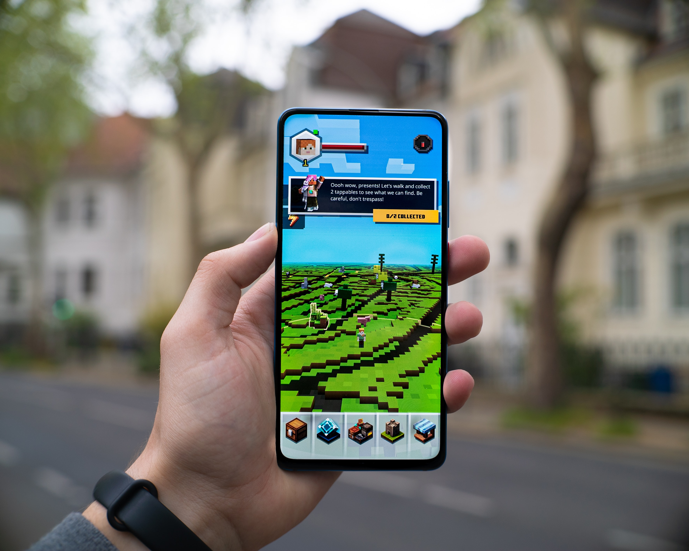

Consoles
 Photo by
Rohit Choudhari
on
Unsplash
Photo by
Rohit Choudhari
on
Unsplash
Consoles have been around commercially since the early 1970's. The first models played only games built into the hardware itself. This gave way to cartridges, cd-rom, and DVDs by the early 2000's.
Modern consoles can connect to televisions or monitors and can either accept insertable media or downloads from the internet.
As of this writing, there are three main competitors in this space:
- Sony PlayStation 4
- Microsoft Xbox One X
- Nintendo Switch
Personal Computer
 Photo by
Alex Haney
on
Unsplash
Photo by
Alex Haney
on
Unsplash
Personal computers are omnipresent. However, for more graphically intensive games, a higher end computer and graphics card are often required. This can get expensive quickly. They offer the most powerful options currently, but affordability is definitely a factor.
Mobile
 Photo by Mika BaumeisterMobile devices are everywhere and most of the current smartphones have options for buying and playing games. The games are usually much more affordable for these devices due to competition on their respective "App Stores".
There are some potential downsides, though. Screen size, processor power, device storage capacity, and limitations of a touch screen are often limiting factors on what kinds of game can be played on them.